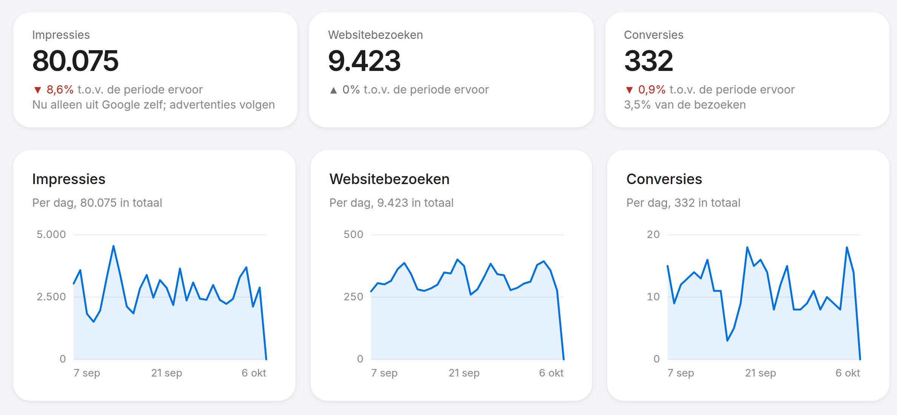

zo vaak een serieus gesprek als je binnen het uur terugbelt. Lees waarom, p. 36
Beste ondernemer,
Je hebt dit magazine in handen omdat je wilt groeien. Dat willen wij ook, voor jou. Op deze pagina staat waar je ons aan mag houden. Wat erachter zit, lees je in de rest van het magazine.
Marketing moet geld opleveren. Doet het dat niet, dan is het een hobby. Daar zijn we niet voor.
Geen pdf meer aan het eind van de maand. Elke klant van James Robinson krijgt een eigen portaal waarin de cijfers van Google, Meta, LinkedIn en de eigen website samenkomen. Elk uur bijgewerkt, en precies dezelfde cijfers die wij gebruiken om je campagnes bij te sturen.
Vragen, materiaal, akkoorden: alles gaat naar één adres, support@jamesrobinson.nl. Iedereen die aan jouw campagnes werkt, leest mee. Je krijgt binnen één werkdag antwoord van degene die erover gaat. Brandt er echt iets, dan bel je gewoon naar kantoor.
Een paar keer per jaar staan we met klanten en het team op de padelbaan. Geen presentaties, wel een goed potje en een drankje achteraf. Ook als je nog geen klant bent, ben je welkom. Meer op pagina 68.
Onderzoekers stuurden ruim tweeduizend bedrijven een online aanvraag. Bijna een kwart reageerde nooit. Wie wel reageerde, deed er gemiddeld 42 uur over. Waarom dat ertoe doet, lees je op pagina 36.
Bij de grote techbedrijven blijkt hooguit een op de drie geteste ideeën het resultaat te verbeteren. De rest werkt niet, of zelfs averechts. Het bewijs dat meten belangrijker is dan mening.
We werken voor ondernemers binnen zo’n dertig kilometer van ons kantoor in Hulsberg. Dicht genoeg om snel aan tafel te zitten als dat nodig is.
[twee of drie zinnen, met naam en wat ze komen doen]
Nee. Een verzorgd profiel op social media is goed voor je merk. Alleen is het geen manier om voorspelbaar nieuwe klanten te vinden. Daarover gaat het verhaal op pagina 20.
Pieken en dalen, en te weinig van het werk waar je het meest aan verdient.
Wat we doen. We richten campagnes op de diensten met de beste marge, op het moment dat je ze nodig hebt.
Je netwerk is goud waard, maar je hebt het niet in de hand.
Wat we doen. We bouwen een tweede bron van aanvragen, naast je netwerk. Voorspelbaar en bij te sturen.
Bezoekers komen, kijken rond en vertrekken weer.
Wat we doen. We meten waar ze afhaken, en bouwen pagina’s die aanzetten tot een aanvraag.
Veel moeite voor een handvol likes, vooral van mensen die je al kent.
Wat we doen. We adverteren bij de mensen die je nog niet kent. Lees meer op pagina 20.
Rapporten vol vakjargon, en geen antwoord op de vraag die ertoe doet.
Wat we doen. Je ziet alles realtime in je eigen portaal. En we sturen op één vraag: wat kost een klant je?
Je doet al zoveel zelf. Marketing schuift steeds naar morgen.
Wat we doen. Wij doen het werk. Jij houdt de regie, met een vast ritme en één aanspreekpunt.
Op Google, op Instagram, in je eigen tijdlijn. En jij nergens.
Wat we doen. In onze quickscan zien we waar je concurrenten adverteren, en waar ruimte voor jou ligt.
Dus voelt elke euro aan marketing als een gok.
Wat we doen. We rekenen het samen uit, vanaf je omzetdoel. Dan weet je waar je op stuurt.
Prijsvragers, mensen van buiten je regio, of vragen naar werk dat je niet doet.
Wat we doen. We sturen op kwaliteit: per aanvraag geef je aan of hij goed was, en daar passen we de doelgroep op aan.
Kliks genoeg, maar weinig aanvragen.
Wat we doen. We brengen structuur en meting aan, en sturen op aanvragen in plaats van kliks.
Is er vraag naar? Dat wil je weten voordat je groot investeert.
Wat we doen. Met een gerichte campagne zie je binnen weken of de markt reageert.
Elke advertentie, elke post, elk drukwerk een beetje anders.
Wat we doen. We leggen je merk één keer vast. Daarna klopt alles wat we maken, tot de kleinste advertentie.
We zijn goed in één ding: zorgen dat er voorspelbaar nieuwe aanvragen binnenkomen, en dat die steeds minder kosten. Daar hoort ook bij dat we eerlijk zeggen wanneer we niet de beste keuze zijn. Dat scheelt jou tijd en geld, en ons een samenwerking die niemand blij maakt.
Zoek je iemand die vooral je social media bijhoudt, dan zijn er bureaus die dat met liefde doen. Wil je één losse campagne voor een evenement, of draait je bedrijf om een webshop, dan past onze aanpak minder goed. Hetzelfde geldt voor het werven van personeel: daar zijn specialisten voor, en we brengen je graag met ze in contact.
En soms is het moment niet goed. Als je nu al geen extra klanten aankunt, heeft het weinig zin om er meer binnen te halen. Dan kijken we liever eerst samen waar de groei vastloopt.
Op basis van je antwoorden en onze quickscan hoor je of we denken dat we iets voor je kunnen betekenen. Is het antwoord nee, dan zeggen we dat, en waarom.
James Robinson werd bedacht in 2017 en een jaar later opgericht in Hulsberg. Inmiddels werken er zo’n tien specialisten: in adverteren, data, content, websites en strategie. Zeven van hen begonnen hier als stagiair. We leiden mensen graag zelf op, in onze eigen manier van werken.
Die manier van werken is simpel uit te leggen. We zien marketing als één systeem. Adverteren brengt de juiste mensen naar je toe, content zorgt dat ze blijven kijken, je website zet ze om in een aanvraag. Daaromheen bouwen we de onderdelen die elke volgende klant goedkoper maken: betere pagina’s, e-mail en vindbaarheid in Google.
Alles wat we doen, meten we. Niet om er mooie rapporten van te maken, maar om te weten wat werkt en wat niet. Je ziet dezelfde cijfers als wij, op elk moment van de dag. En je merk is daarbij heilig: alles wat we maken, ziet eruit en klinkt als jij.
Veel van wat in marketing normaal is, is vooral handig voor het bureau. Wij werkten jarenlang zelf ook zo. Tot we zagen wat het onze klanten kostte, en besloten het anders te doen.
Wie bij ons binnenstapt, komt niet in een vergaderzaal met een beamer en een schaal koekjes. Dat is bewust. We zijn een digitaal bureau: onze campagnes draaien online, onze cijfers staan in de cloud, en veel overleg kan prima via een scherm. Maar de momenten die er echt toe doen, het eerste gesprek, een brainstorm, een terugblik op het jaar, die werken het best met mensen samen aan één tafel.
Daarom werken we voor ondernemers binnen zo’n dertig kilometer van Hulsberg. Dichtbij genoeg om snel bij jou of bij ons aan tafel te zitten als de situatie erom vraagt. Je Performance Review, het vaste overleg over je resultaten, kan hier op kantoor of online. Wat jij prettig vindt.
Ons kantoor hebben we ingericht met één vraag in het achterhoofd: waar doen mensen hun beste werk? Het antwoord is tweeledig. Soms heb je stilte nodig, om geconcentreerd een campagne te bouwen of door cijfers te gaan. En soms heb je ruimte nodig om groot te denken, met een whiteboard vol ideeën. We hebben plekken voor allebei. [wat het kantoor bijzonder maakt: de plek, het gebouw, faciliteiten]
Dat is de lat die we voor onszelf leggen. Bij een sterrenrestaurant klopt alles tot in het kleinste detail, zonder dat iemand het hoeft uit te leggen. Je voelt het gewoon. Zo willen we dat het voelt om bij ons binnen te lopen, en om met ons samen te werken.
Plus de beste specialisten in de regio. Voor fotografie, video, animatie en techniek werken we met vaste partners, elk de beste in hun vak.
In onze vakwereld bestaan twee kampen. Het ene kamp gelooft in data: targeting, testen, kosten per klik. Het andere kamp gelooft in creativiteit: een sterk merk, een mooi beeld, een verhaal dat blijft hangen. Ik word vaak gevraagd bij welk kamp ik hoor. Mijn antwoord: allebei.
Data vindt de juiste persoon, op het juiste moment. Maar als je advertentie daar dan niet opvalt, scrollt die persoon gewoon door. Andersom geldt hetzelfde. De mooiste campagne levert niets op als hij bij de verkeerde mensen terechtkomt.
Science en art zijn geen tegenpolen. Ze hebben elkaar nodig. Groot Brits onderzoek naar honderden campagnes, door het vakinstituut voor reclame IPA, laat dat ook zien: bedrijven die alleen sturen op snelle verkoop groeien op termijn minder hard dan bedrijven die ook bouwen aan een merk dat mensen herkennen.
Bij ons beslist de data over wie je advertentie ziet, wanneer, en hoeveel budget waarheen gaat. Je merk beslist over hoe die advertentie eruitziet en klinkt. Daar maken we geen uitzonderingen op. Ook een snelle test klopt met je kleuren, je letters en je toon.
Wat goede resultaten zijn, vertellen de cijfers ons. Hoe we daar komen, met een merk waar je trots op bent, daar zorgen wij voor.
Jim Coumans richtte James Robinson op in 2018.
Wie in de jaren zeventig een zaak opende, wist wat hem te doen stond. Een advertentie in de regionale krant, misschien een spotje op de lokale radio, een bord langs de doorgaande weg. Iedereen in de streek las dezelfde krant. Wie erin stond, bestond.
Dertig jaar later verschoof dat naar internet. Eerst kwam de website, als digitaal visitekaartje. Daarna Google: wie bovenaan stond, kreeg de klanten. En toen kwam social media. Facebook, later Instagram en LinkedIn, beloofden iets wat nog nooit had bestaan: bereik zonder dat het iets kostte. Een goed bericht kon duizenden mensen bereiken, gewoon via de tijdlijn van je volgers.
Die belofte is blijven hangen. Voor veel ondernemers is posten nog altijd het hart van hun marketing. Dat is begrijpelijk. Het is vertrouwd, je kunt het zelf, en je ziet het resultaat met eigen ogen op je telefoon. Alleen ziet bijna niemand anders het.
In tien jaar zijn de grote platformen veranderd van een plek waar je gratis werd gezien in een marktplaats waar je betaalt voor aandacht. Dat is geen complot, het is hun verdienmodel. Google, Meta, LinkedIn en TikTok verdienen hun geld met advertenties. Hoe beter die advertenties werken, hoe meer bedrijven terugkomen.
Ze hebben er dus alle belang bij dat jouw advertentie resultaat oplevert. Ze zijn er ook steeds beter in geworden: geen platform weet zo goed wie op het punt staat iets te kopen. Maar die kennis zetten ze alleen in als je ervoor betaalt.
Voor gewone berichten blijft weinig ruimte over. Een bedrijfspagina bereikt met een bericht gemiddeld één tot drie procent van de eigen volgers, blijkt uit recente cijfers van het onderzoeksbureau Socialinsider. Bij kleine pagina’s ligt dat wat hoger, maar zelden boven de zeven procent.
En wie zijn die volgers eigenlijk? Kijk eens naar de eerste vijftig. Meestal zijn het bestaande klanten, oud-collega’s, familie, leveranciers en een paar concurrenten die je in de gaten houden. Allemaal mensen die je al kennen. De mensen die je nog niet kent, en die volgende maand je klant kunnen worden, zitten er nauwelijks tussen.
Betekent dat dat je social media moet laten liggen? Nee. Een verzorgd profiel bouwt aan je merk. Het laat zien dat je bestaat, dat je zaak leeft, en het geeft mensen die je al kennen een reden om terug te komen. Wie op zoek is naar een nieuwe leverancier, kijkt vaak even op je Instagram of LinkedIn. Dan is het fijn als daar iets staat.
Alleen is het geen manier om voorspelbaar nieuwe klanten te vinden. Viraal gaan kan, maar niemand kan het plannen, en op toeval bouw je geen omzet. Bovendien is posten minder gratis dan het lijkt. Iemand moet het bedenken, fotograferen, schrijven en plaatsen, elke week opnieuw. Die tijd is geld, en het bereik dat je ervoor terugkrijgt, is klein en niet te sturen.
Bij adverteren kies je zelf wie je ziet. Mensen in jouw regio. Met een bepaalde functie of in een bepaalde branche. Die net zochten op precies wat jij aanbiedt, of die vorige week op je website waren en nog twijfelen. Je ziet per euro wat het oplevert, en wat niet werkt, zet je uit.
Dat vraagt ook iets: goede content, een budget, en geduld in de eerste maanden. Daar komen we later in dit magazine op terug. Maar het levert iets op wat posten niet kan: een voorspelbare stroom nieuwe aanvragen, die je kunt laten groeien als het werkt.
| Een bericht plaatsen | Adverteren | |
|---|---|---|
| Wat het kost | Vooral tijd, elke week opnieuw | Tijd voor goede content, plus budget |
| Wie het ziet | Een klein deel van je volgers | Mensen die jij kiest, ook nieuwe |
| Sturen | Plaatsen en afwachten | Meten, bijsturen, opschalen |
| Goed voor | Je merk en je vaste klanten | Nieuwe klanten, voorspelbaar |
De algoritmes van Google en Meta kunnen niet lezen wat jij goed vindt aan je product. Ze kunnen wel meten. Wie klikt, wie haakt af, wie vult een formulier in. Met elke weergave leren ze beter wie jouw klant is. Daarvoor hebben ze data nodig, en data komt pas met tijd en budget.
Daarom beginnen we breed. We testen verschillende doelgroepen, boodschappen en beelden naast elkaar. Na een paar weken zie je wat aanslaat. Wat werkt, krijgt meer budget. Wat niet werkt, stopt. Zo wordt elke maand een beetje slimmer dan de vorige.
Elk advertentiekanaal werkt als een veiling. Willen veel bedrijven dezelfde doelgroep of hetzelfde zoekwoord bereiken, dan stijgt de prijs. Een installateur betaalt in een koude winterweek meer voor een klik op “cv-ketel storing” dan in juli. Een makelaar betaalt meer in een drukke markt dan in een rustige.
Het vak zit in de mix: op het juiste moment, bij de juiste mensen, met de juiste boodschap, tegen een prijs die uit kan. Dat is geen eenmalige instelling. Het is werk dat elke week doorgaat.
De vraag is dus niet of je zichtbaar bent. De vraag is of je zichtbaar bent bij de mensen die morgen je klant kunnen worden.
In Silicon Valley werken de slimste mensen ter wereld. Ze komen van de beste universiteiten, verdienen salarissen waar de meeste ondernemers alleen van kunnen dromen, en hebben één opdracht: producten bouwen die precies aansluiten op hoe mensen denken en kiezen.
Je zou denken dat zij wel weten wat werkt. Toch testen ze bij Google vrijwel elk idee voordat het live gaat. En wat blijkt? Slechts tien tot twintig procent van die ideeën maakt het resultaat echt beter. De rest doet niets, of werkt zelfs averechts.
Dat is een les in bescheidenheid. Voor ons, en eerlijk gezegd ook voor jou. Welke advertentie de mooiste is, welke kleur beter werkt, welke tekst overtuigt: daar kunnen we lang over praten, en dat doen we ook. Maar het laatste woord is aan de cijfers.
Dat betekent niet dat alles mag. We maken nooit iets wat niet bij je merk past of wat niet goed voelt. Maar binnen die grenzen kiest de data, niet de smaak.
Eigenlijk luisteren we het liefst naar één persoon: de klant van onze klant. De mensen die jouw product of dienst kopen. Met hen praten we niet rechtstreeks. Maar wat ze doen, zien we wel. Waar ze op klikken, waar ze twijfelen, waar ze afhaken, wat ze uiteindelijk kopen. Dat gedrag vertelt meer dan welke vergadering ook.
Numbers don’t lie. Daarom sturen we erop.
Adverteren is de motor. Content is de brandstof. Je website is waar het landt. En vier versnellers maken elke klant daarna goedkoper.
Foto, video, animatie en visuals. Gemaakt om te presteren, altijd on-brand.
Google, Meta, LinkedIn, TikTok. Bereikt de juiste mensen, nu, en is per euro te meten en bij te sturen.
Hier wordt een bezoeker een aanvraag. Of niet.
Ready to buy. Vanaf hier is het jouw beurt.
Alles begint bij adverteren in zoekmachines en op social media. Het is het enige onderdeel van marketing dat je vandaag aanzet en morgen kunt meten. Op Google bereik je mensen die op dit moment zoeken naar wat jij aanbiedt. Op Meta, LinkedIn en TikTok bereik je mensen die lijken op je beste klanten, nog voordat ze zoeken.
Een motor zonder brandstof doet niets. Advertenties draaien op beeld en tekst, en goede content maakt het verschil tussen doorscrollen en stoppen. Daarom plannen we de contentproductie meteen aan het begin, en maken we steeds nieuwe varianten om te testen.
Elke advertentie leidt naar een pagina. Daar besluit een bezoeker of hij een aanvraag doet of vertrekt. Daarom bouwen we per campagne een eigen landingspagina: snel, duidelijk en met één doel. En we meten precies wat er gebeurt.
Het eindpunt van ons werk is een aanvraag van goede kwaliteit, bij jou op de mat. Wat daarna gebeurt, het gesprek, de offerte, de verkoop, is jouw terrein. Daar denken we graag over mee, maar daar ligt de regie bij jou.
Als de motor draait, bouwen we versnellers. CRO haalt meer aanvragen uit hetzelfde verkeer. E-mail en automation halen terug wie er al was. SEO zorgt voor verkeer waar je niet per klik voor betaalt. Allemaal met hetzelfde doel: elke volgende klant goedkoper maken.
Over alles heen ligt een laag die je niet ziet maar wel merkt. Elke dag kijken we wat er buiten de lijntjes loopt: een campagne die niets besteedt, een formulier dat niet werkt, kosten die oplopen. Zo grijpen we in voordat het geld kost.
Waarom niet meteen alles tegelijk? Omdat elk onderdeel van marketing een eigen tempo heeft. SEO is waardevol, maar het duurt vaak maanden voordat je hoger in Google staat. Organisch posten bouwt aan je merk, maar levert zelden voorspelbaar nieuwe klanten op.
Adverteren is anders. Het staat vandaag aan en laat binnen weken zien welke woorden, doelgroepen en boodschappen werken. Die kennis is goud waard, ook voor de rest. We weten dan op welke zoekwoorden SEO zich gaat terugverdienen, welke boodschap op je website moet, en wat je in een e-mail zet.
Zo verloopt het meestal. Illustratief: hoe snel het echt gaat, verschilt per markt en per bedrijf.
We zetten SEO, e-mail en CRO pas in als de motor draait, in de volgorde die de cijfers aanwijzen. Los ingezet hebben ze geen ijkpunt. Als versneller wel.
Meting, accounts, campagne, landingspagina en de eerste content.
Leren wat werkt. Ballonnetjes oplaten, meten, bijsturen.
Je landingspagina beter maken, en e-mail om terug te halen wie er al was.
SEO op de woorden die bewezen klanten opleveren, en automation.
Een voorbeeld. De volgorde van de versnellers bepalen jouw cijfers: bij de een eerst SEO, bij de ander eerst e-mail.
Meer aanvragen, tegen lagere kosten per aanvraag. De motor brengt volume, de versnellers maken het goedkoper. Illustratief, per maand.
Zo groeit het systeem mee. Eerst snel leren met adverteren, dan bouwen we de onderdelen die elke volgende klant goedkoper maken.
Iemand scrolt door Instagram. In een fractie van een seconde besluit hij of hij stopt bij jouw advertentie, of doorgaat. Dat besluit wordt niet genomen door het algoritme, maar door het beeld. Een herkenbaar gezicht, je eigen zaak, je eigen product in actie. Stockfoto’s halen het daar zelden bij.
Daarom beginnen we elke samenwerking met een contentplan. Wat moet het beeld vertellen? Voor wie? In welke formaten en voor welke kanalen? Daarna volgt de shoot, bij jou op locatie, op een moment dat jou uitkomt. Op die dag maken we het beeld waarmee je advertenties de komende maanden draaien.
Voor elke vorm van content werken we met de absolute experts in hun vak, afgestemd op wat jij nodig hebt. Een fotograaf die mensen op hun gemak stelt. Een videograaf die in vijftien seconden een verhaal vertelt. Een animator, een copywriter. Zij maken het, wij zorgen dat het presteert.
Advertenties slijten. Zien dezelfde mensen een advertentie te vaak, dan klikken ze minder en lopen de kosten per resultaat op. Meta waarschuwt daar in zijn eigen advertentiesysteem zelfs voor. Daarom maken we in vaste rondes nieuwe varianten, en testen we die tegen de lopende.
Elke campagne krijgt een eigen pagina, met één boodschap en één actie. Geen menu vol afleiding, geen tekst die over iets anders gaat. Wie op een advertentie over zonnepanelen klikt, landt op een pagina over zonnepanelen.
Wanneer. vanaf de start · Effect. meer bezoekers worden een aanvraag
Conversion rate optimization: kijken waar bezoekers afhaken, en dat verbeteren. Een korter formulier, een duidelijkere knop, een antwoord op de twijfel die iedereen heeft. Elke verbetering levert meer aanvragen op uit hetzelfde budget.
Wanneer. als er verkeer is · Effect. meer aanvragen voor hetzelfde geld
Niet iedereen koopt bij het eerste bezoek. Met e-mail houd je contact met wie al interesse toonde, zonder opnieuw voor die aandacht te betalen. En met automation gaat dat vanzelf, op het juiste moment: een herinnering, een tip, een aanbod.
Wanneer. als er adressen zijn · Effect. een klant levert meer op
Hoger in Google komen kost tijd. Daarom richten we ons op de zoekwoorden waarvan we via je advertenties al weten dat ze klanten opleveren. Zo wordt een deel van je verkeer gratis, op precies de woorden die ertoe doen.
Wanneer. als de cijfers het aanwijzen · Effect. verkeer zonder kosten per klik
Elke versneller komt uit op hetzelfde getal: wat een nieuwe klant je kost. Daarom zetten we ze in als onderdeel van het systeem, en verkopen we ze niet los.
Elke stap kun je meten. En als je weet waar het knelt, weet je ook aan welke knop je moet draaien.
Een rekenvoorbeeld bij € 500 aan advertenties in een maand, tegen € 2,50 per klik.
Kosten per aanvraag in euro’s. Meer budget geeft meer aanvragen tegen dezelfde prijs. Een betere pagina geeft ze goedkoper.
Neem een installateur uit de Westelijke Mijnstreek. Zijn advertenties worden goed bekeken en er komen genoeg bezoekers op zijn website. Toch blijven de aanvragen achter. Waar zit het probleem?
De cijfers geven het antwoord. Van de bezoekers doet maar één procent een aanvraag, waar twee tot drie procent normaal is. De advertentie doet dus haar werk, de pagina niet. We maken het formulier korter, zetten de reviews bovenaan en laten zien hoe snel hij langs kan komen. Twee weken later is de conversie verdubbeld, zonder een euro extra budget.
Dit voorbeeld is verzonnen, het principe niet. Elke stap in de keten heeft een eigen knop, en de cijfers wijzen aan welke je moet draaien.
| Wat we zien | Wat we kunnen doen |
|---|---|
| Weinig impressies Wij | Budget verschuiven, doelgroep verbreden, ander kanaal of zoekwoord |
| Wel gezien, weinig kliks Wij | Nieuw beeld, andere boodschap, scherpere doelgroep |
| Wel bezoekers, weinig aanvragen Wij | Pagina sneller en duidelijker, korter formulier, sterker aanbod |
| Wel aanvragen, weinig klanten Jij, met ons | Sneller opvolgen, aanbod en prijs scherper. Wij kijken mee naar de kwaliteit |
Een paar jaar geleden zat Ruud bij ons aan tafel. Een ondernemer met ambitie, net begonnen in een nichemarkt waar een handvol gevestigde namen de dienst uitmaakte. Hun websites stonden bovenaan in Google, hun namen kende iedereen in de branche. Ruud was de nieuwkomer, en dat wist hij.
Toch zagen we ruimte. Zijn aanbod was scherp, zijn prijs eerlijk, en er werd genoeg gezocht op wat hij deed. We besloten te beginnen met Google Ads: adverteren bij mensen die op dat moment actief zochten naar precies zijn dienst.
De eerste weken waren zoeken. Welke zoekwoorden leverden aanvragen op, en welke alleen kliks? Welke advertentietekst sprak aan? Op welke uren en in welke plaatsen zat de vraag? We stelden bij, schoven met budget en testten opnieuw.
En toen kantelde het. De aanvragen kwamen binnen, eerst een paar per week, daarna bijna elke dag. Meer dan we vooraf hadden ingeschat. In de periodieke overleggen ging het over de cijfers, en die zagen er goed uit. Wij tevreden, Ruud tevreden. Dachten we.
Op een dag kwam er een mail. Ruud zegde op. Zijn reden was kort: het leverde hem geen klanten op.
Bij ons gingen alle alarmbellen af. Kwamen de aanvragen wel echt binnen? Klopte onze meting? Was de kwaliteit misschien slecht, en hadden we dat over het hoofd gezien? We doken erin en controleerden alles, aanvraag voor aanvraag.
De aanvragen waren echt. Het waren mensen uit de juiste regio, met precies de vraag waarvoor Ruud zijn bedrijf was begonnen. Aan de campagne lag het niet.
Het antwoord kwam pas toen we Ruud vroegen hoe hij zijn aanvragen opvolgde. Hij belde ze na een dag of zeven. Bewust. Ze hadden net een heel formulier ingevuld, legde hij uit. Dan wilde hij ze niet meteen lastigvallen. Hij wilde niet opdringerig overkomen.
Vanuit Ruud gezien was dat beleefd. Vanuit zijn klant gezien was het stilte. Wie een aanvraag doet, heeft op dat moment een vraag of een probleem, en wil verder. Hoort hij een paar dagen niets, dan zoekt hij verder. De concurrent die wel binnen het uur belde, kreeg de opdracht.
Zo leverde een campagne die alles deed wat ze moest doen, toch geen klanten op. Niet omdat er iets mis was met de advertenties, maar omdat er niemand opendeed.
Ruud is bij ons een begrip geworden. Niet omdat hij iets doms deed, maar omdat zijn verhaal laat zien waar het in marketing vaak misgaat: precies op het moment dat het werk van het bureau ophoudt en dat van de ondernemer begint.
Onze rol is helder. Wij zorgen dat de juiste mensen je vinden, dat ze een aanvraag doen, en dat die aanvraag van goede kwaliteit is. Mensen die klaar zijn om te kopen, afgeleverd tot aan je voordeur. Wat daarna gebeurt, bepaal jij: hoe snel je belt, hoe je het gesprek voert, wat je aanbiedt.
We denken daar graag over mee. Maar we spreken het vooraf af, zodat we allebei weten wie waarvoor verantwoordelijk is. En we meten het, vanaf de eerste dag.
Geen pdf aan het eind van de maand. Een eigen portaal met je cijfers, elk uur bijgewerkt. Van impressie tot aanvraag, per bron.

Voorbeeldweergave met demogegevens.
Veel ondernemers die bij ons komen, hadden eerder een bureau. En bijna allemaal vertellen ze hetzelfde: aan het eind van de maand kwam er een rapport, vol grafieken en vaktermen, maar zonder antwoord op de vraag die ertoe deed. Wat heeft het me opgeleverd?
Daarom bouwden we ons eigen portaal. Daarin zie je precies wat wij zien, op elk moment van de dag. Hoeveel mensen je advertenties zagen, hoeveel er doorklikten, hoeveel aanvragen er binnenkwamen en wat die kostten. Per kanaal, per campagne, per dag.
Elke aanvraag komt in het portaal binnen. Met één klik geef je aan of hij goed was, en later of het een klant werd. Daarmee leren wij welke campagnes de beste klanten opleveren, niet alleen de meeste aanvragen.
Ook je merk staat erin: je logo’s, kleuren en lettertypes, in je eigen merkkluis. En je lopende campagnes en budget. Stop je ooit met ons, dan blijft je dashboard gewoon van jou.
We zetten AI en automatisering in waar het je iets oplevert: minder fouten, sneller bijsturen, en meer werk voor hetzelfde geld. Niet om mensen te vervangen, wel om ze vrij te maken voor wat telt.
Je eigen marketingdashboard, met de vier ketengetallen en de kosten per aanvraag. Elk uur bijgewerkt, zonder dat iemand iets hoeft over te typen.
Besteedt een campagne niets, wordt een advertentie afgekeurd of komen er geen aanvragen meer binnen, dan staat het de volgende ochtend bovenaan bij ons.
Met je merk vastgelegd in ons portaal maken we sneller nieuwe advertenties om te testen. Hoeveel varianten zinvol zijn, hangt af van je budget: testen vraagt verkeer.
Elke start volgt dezelfde 76 taken, met checklists. Wat een machine kan controleren, controleert een machine.
Beslissen over je budget, je doelgroep of je merk. Dat doen mensen, met jou.
Van wijnhandel tot makelaar, van garage tot zorgpraktijk. Wat ze gemeen hebben: ze willen dat marketing zich terugverdient.
[waar de klant stond: het bedrijf, de markt, het probleem of de ambitie, en wat dat kostte. Drie tot vijf zinnen.]
[wat we deden: welke campagnes, welke kanalen, welke content, wat we aan de website veranderden, en waarom. Vier tot zes zinnen.]
[wat het opleverde, in aanvragen, kosten per aanvraag en omzet, over welke periode. Drie tot vijf zinnen.]
[het opvallendste inzicht uit deze case, bijvoorbeeld een doelgroep of boodschap die verraste]
[waar de klant stond: het bedrijf, de markt, het probleem of de ambitie, en wat dat kostte. Drie tot vijf zinnen.]
[wat we deden: welke campagnes, welke kanalen, welke content, wat we aan de website veranderden, en waarom. Vier tot zes zinnen.]
[wat het opleverde, in aanvragen, kosten per aanvraag en omzet, over welke periode. Drie tot vijf zinnen.]
[het opvallendste inzicht uit deze case, bijvoorbeeld een doelgroep of boodschap die verraste]
Hoe we tot een voorstel komen, wat je mag verwachten, wat het kost, en wat we van elkaar afspreken.
Daarom stellen we aan de voorkant veel vragen, en doen we grondig vooronderzoek. Daaruit komt een onderbouwde hypothese, en een advies.
Een vragenlijst over je bedrijf, je klanten en je doelen.
We bekijken je website, je meting en je markt. Wat werkt al, wat kost je nu klanten?
Een uur aan tafel. Wat een formulier niet kan vragen, vragen we hier.
Waar we in geloven, waarom, en hoe dat er voor jou uitziet. Of een eerlijk nee.
Denken we op basis van de cijfers dat we te weinig voor je kunnen betekenen, dan zeggen we dat. We hebben er niets aan om over een paar maanden tegenover een ontevreden ondernemer te zitten.
We beginnen bij jouw ambitie, en rekenen terug.
Het startpunt van alles.
Uit wat een klant je gemiddeld oplevert.
Uit hoeveel van je aanvragen klant worden.
Je advertentiebudget is de motor. Hoe groot die motor moet zijn, volgt uit je ambitie.
Een voorbeeld. Elke euro marketing levert er in deze hypothese vier op. Welke verhouding voor jou haalbaar is, onderbouwen we in je voorstel.
Marketing is per definitie trial and error. We laten ons leiden door cijfers, en handelen op kennis en ervaring. Soms laten we ballonnetjes op die niet vliegen. Dat is niet erg: het is een les over wat niet werkt voor jouw bedrijf, jouw branche, jouw regio.
Illustratief. Het nadeel van marketing: de investering ligt aan de voorkant, de opbrengst komt aan de achterkant.
Advertenties hebben tijd, geld en data nodig. In het begin loopt de lijn vlak. Als er eenmaal tractie is, versnelt het. Bij de een na een week, bij de ander na zes maanden.
Illustratief. De band laat zien dat het omslagpunt per bedrijf verschilt.
In de opstartmaand zetten we alles neer. Vanaf dan rekenen we gewoon per maand en per jaar.
| Binnen 3 werkdagenna het tekenen | Onboardingformulier en alle toegangen, in één sessie van 45 minuten |
| Week 1 | Technische check, doelgroep, boodschap en zoekwoorden |
| Week 2 | Advertentieaccounts, e-mail, je portaal en de meting |
| Week 3 | Campagne en landingspagina bouwen, en de shoot bij jou op locatie |
| Week 4 | Live |
Niet los verkrijgbaar. De basis zonder campagne is een stopcontact zonder apparaat. Een campagne zonder basis levert aanvragen op die je niet kunt meten of verbeteren.
Een dag filmen kost bij een extern bureau al snel € 1.500. Het fundament krijg je na de start niet terug: dat werk is gedaan.
Welk pakket bij je past, volgt uit je doel en je advertentiebudget. De namen komen uit de sport.
Na de opstartmaand. De maandelijkse samenwerking start als je campagne live is. Het advertentiebudget betaal je rechtstreeks aan de platformen.
Het hoogste van twee telt: campagnes of budget. Omhoog gaat per direct, omlaag per de eerste van de maand.
Eén campagne is één aanbod, voor één doelgroep, met één landingspagina. Op Google en Meta samen is het nog steeds één campagne.
Liever één kanaal goed dan drie half. Per kanaal minimaal € 500 per campagne per maand, op LinkedIn € 1.000.
De tools waarmee je motor draait. Ze staan op jouw naam en de leverancier factureert rechtstreeks. Alleen het portaal en de samenwerking gaan via ons.
| Wat | Wanneer | Bedrag |
|---|---|---|
| Je portaal | Altijd. Blijft van jou als je stopt | € 25 p/m |
| E-mail (MailerLite) | Altijd, naar lijstgrootte | € 9,90 – 73 p/m |
| Cookiemelding | Altijd: zonder toestemming mag je niet meten | € 150 p/j |
| Klikfraudebescherming | Optioneel, jij beslist | vanaf $ 99 p/m |
| Bezoekersherkenning (Leadinfo) | Optioneel, alleen zakelijk | € 69 – 179 p/m |
| Afsprakenplanner | Optioneel, per gebruiker | € 15 p/m |
| Hosting en onderhoud | Alleen als je overstapt; migratie is gratis | € 85 p/m |
| Snelheid van de site zelf | € 750 |
| Redirects en dode links | € 500 |
| E-mailauthenticatie | € 250 |
Bij een gezonde website is dit allemaal nul. Meting, indexatie en je bedrijfsprofiel kosten nooit extra: dat zit in het fundament.
Je mag elke marketingvraag bij ons neerleggen. Soms is het antwoord “dat doen wij”, soms “daarvoor moet je bij haar zijn”.
In elk pakket. Het pakket bepaalt hoeveel.
Als eigen project met een prijs vooraf, of via een partner. Zonder opslag.
Ook niet als het gesprek goed loopt.
Zelf, of door je te koppelen aan de beste vakmensen in de regio. Jij houdt één aanspreekpunt, en je betaalt de specialist, nooit ons bovenop de specialist.
Binnen één werkdag antwoord, van wie erover gaat. Iedereen die aan je werkt, leest mee.
Als je campagne of website eruit ligt, of er geld verloren gaat.
Dezelfde cijfers als wij, elk uur bijgewerkt. Met elke aanvraag erin.
| Elke dag | Wij kijken mee. Wat afwijkt, pakken we op voordat jij het merkt |
| Elke maand | Een update in je dashboard: zitten we op je doel, wat deden we, wat doen we nu |
| Per pakket | De Performance Review: een uur, op ons kantoor of online, over resultaat |
| Na 100 dagen | Een eerlijke terugblik: werkt het, en wat moet anders |
| Elk jaar | Het jaargesprek: waar wil je volgend jaar staan |
Waarom geen WhatsApp-groep? Een mail blijft openstaan tot iemand hem heeft afgehandeld. Een appje zakt weg.
Omdat je bij ons moet blijven omdat het werkt, niet omdat je vastzit. Je kunt elke maand opzeggen, tot de laatste dag van de maand. Het fundament is eenmalig werk dat je bij de start betaalt; dat krijg je na de start niet terug, omdat het dan gedaan is.
Nee. Een verzorgd profiel is goed voor je merk en voor de mensen die je al kennen. Alleen is het geen manier om voorspelbaar nieuwe klanten te vinden. Daarvoor adverteren we. Het beeld uit je campagnes kun je ook op je eigen kanalen gebruiken.
De eerste aanvragen komen vaak in de eerste weken binnen. De platformen hebben wel tijd, budget en data nodig om te leren. Rond maand drie trekken we de eerste voorzichtige conclusies. Bij de een gaat het sneller, bij de ander duurt het langer.
Dan zie je dat in je portaal, en zeggen wij het zelf, met de cijfers en een verklaring erbij. We sturen bij: andere doelgroep, ander beeld, andere pagina. En lukt het echt niet, dan zeggen we dat ook. Je zit nergens aan vast.
Zodat je precies ziet waar elke euro heen gaat. Er zit geen opslag van ons op, en de accounts staan op jouw naam. Wij beheren ze, jij bent eigenaar.
Van jou. Advertentieaccounts, e-mail, licenties en het beeld uit je shoots staan op jouw naam. Stop je, dan neem je alles mee, ook je dashboard.
We werken als één systeem, omdat de onderdelen elkaar versterken. Heb je een losse vraag, zoals een nieuwe website of een huisstijl, dan doen we het als apart project met een prijs vooraf, of brengen we je in contact met een partner die er beter in is.
In de opstart: een sessie van drie kwartier voor de toegangen, een formulier en een dagdeel voor de shoot. Daarna vooral: aanvragen snel opvolgen, per aanvraag aangeven of hij goed was, en de Performance Review. De rest doen wij.
Ja, waar het je iets oplevert. Bij monitoring, bij het maken van varianten en bij alles waar een machine minder fouten maakt dan een mens. Beslissingen over je budget, je doelgroep en je merk nemen mensen, samen met jou.
Omdat de beste gesprekken aan tafel plaatsvinden. Met klanten binnen zo’n dertig kilometer zitten we snel bij elkaar als dat nodig is. Online kan veel, maar niet alles.
Stel hem in het intakegesprek, of mail naar support@jamesrobinson.nl. Je krijgt binnen één werkdag antwoord.
Ook als het gesprek goed loopt. Juist dan.
Resultaat staat op één. Werkt iets niet, dan zeggen we dat zelf, met de cijfers erbij. Je ziet in je portaal wat wij zien.
Opzeggen kan tot de laatste dag van de maand. De maand erna komt er geen factuur meer. Je blijft alleen omdat het werkt.
Op basis van onderzoek en een onderbouwde hypothese. Anders zeggen we nee.
Ons maandbedrag is nooit meer dan de helft van wat je aan marketing uitgeeft.
Je betaalt de specialist, niet ons bovenop de specialist. Krijgen we een vergoeding van een leverancier, dan zeggen we dat erbij.
Nooit iets “even doen omdat het klein is”. Kleine gunsten worden de norm, en dan betaalt een andere klant ervoor.
Elke uiting klopt met je merk, ook een snelle test. Geen bruikbaar merk? Dan leggen we kleur en typografie vast in het fundament.
We beslissen op cijfers, niet op smaak. Je merk bepaalt de grenzen, daarbinnen kiest de data.
Accounts, e-mail en licenties staan op jouw naam, met jouw betaalgegevens. Wij zijn beheerder. Nooit op onze naam, ook niet even.
Je merk, je aanbod en prijs, je opvolging en je capaciteit. We meten ze wel, en we zeggen het als het daar zit.
Geen garantie van ons en geen straf voor jou. Het is wat nodig is om de cijfers de waarheid te laten vertellen.
Aanvraag Iemand die contact opneemt via een formulier, telefoontje of afspraak. Ook wel lead genoemd.
Advertentiebudget Wat je rechtstreeks aan Google, Meta of LinkedIn betaalt voor je advertenties. De brandstof van de motor.
Campagne Eén aanbod, voor één doelgroep, met één doel en één landingspagina. Op Google en Meta samen is het nog steeds één campagne.
Contentronde Een nieuwe set advertenties, beeld en tekst, om tegen de lopende te testen.
Conversieratio Het deel van je bezoekers dat een aanvraag doet. 200 bezoekers en 4 aanvragen is 2 procent.
CPC Cost per click: wat je gemiddeld betaalt voor één klik op je advertentie.
CPM Wat 1.000 weergaven van je advertentie kosten.
CRO Conversion rate optimization: je website zo verbeteren dat meer bezoekers een aanvraag doen.
CTR Click-through rate: het deel van de mensen dat je advertentie ziet en erop klikt.
Impressie Eén keer dat je advertentie in beeld kwam.
Landingspagina De pagina waar iemand na een klik op je advertentie terechtkomt. Eén boodschap, één actie.
Retargeting Adverteren bij mensen die al eens op je website waren, maar nog geen aanvraag deden.
ROAS Return on ad spend: hoeveel omzet elke euro advertentiebudget oplevert. Een ROAS van 4 is vier euro omzet per euro.
Scoringsratio Het deel van je aanvragen dat klant wordt. Dat deel ligt bij jou.
SEO Search engine optimization: hoger in Google komen zonder per klik te betalen.
Je voorstel en de offerte krijg je binnen drie werkdagen na het intakegesprek. Tekenen en betalen doe je online, dezelfde dag.
Een paar keer per jaar spelen we padel met klanten en het team. Geen presentaties, geen verkooppraat. Gewoon een potje, en daarna een drankje.
Je hoeft nog geen klant te zijn. Wil je meedoen met de volgende wedstrijd, meld je dan aan. Ook als je nog nooit gespeeld hebt.
[waar we spelen]
Binet & Field, The Long and the Short of It, IPA 2013.
Kohavi & Thomke, The Surprising Power of Online Experiments, Harvard Business Review, september 2017. Het cijfer van 10 tot 20 procent geldt volgens de auteurs voor Google en Bing.
Deloitte Digital, Milliseconds Make Millions, in opdracht van Google, 2020.
Oldroyd, McElheran & Elkington, The Short Life of Online Sales Leads, Harvard Business Review, maart 2011.
Socialinsider, Social Media Benchmarks 2026.
Meta Business Help Center, About the learning phase; Creative fatigue. Google Ads Help, Duration of the learning period.
The Performance Issue is het magazine van James Robinson, Marketing & Branding, Hulsberg. Editie 01, najaar 2026.
Alle bedragen zijn exclusief btw. Prijzen gelden voor deze editie; de actuele prijzen staan in je voorstel.
Tekst en vormgeving: James Robinson. Fotografie: [fotograaf]. Druk: [drukker].
Vul de vragenlijst in, dan doen wij de quickscan. In het intakegesprek hoor je wat we zagen, en wat een klant jou mag kosten. Ook als we niet samen verder gaan.